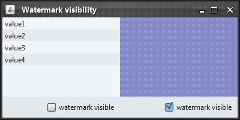
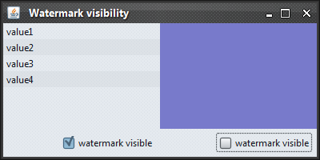

|
Description |
Client property name for requesting that watermark should be painted on
the component and its descendants. This property can be set either as
client property on some component or as global property on
UIManager. The value should be
either Boolean.TRUE or
Boolean.FALSE.
In order to compute whether the current watermark should be painted on
some component, the component's hierarchy is traversed bottom up. The
first component that has this property set, defines the watermark
visibility. Finally, if neither component not its ancestors define this
property, the global setting on
UIManager is checked. If there is
no global setting, the watermark is not ignored (it is painted).
There is special default setting for trees, tables, lists and text
components. These show watermark only when this property is explicitly
set to Boolean.TRUE
on the component itself, one of its ancestors
or the UIManager.
|
|
Sample code |
import java.awt.*;
import java.awt.event.ActionEvent;
import java.awt.event.ActionListener;
import javax.swing.*;
import org.pushingpixels.substance.api.SubstanceLookAndFeel;
import org.pushingpixels.substance.api.skin.BusinessBlackSteelSkin;
import org.pushingpixels.substance.api.watermark.SubstanceCrosshatchWatermark;
/**
* Test application that shows the use of the
* {@link SubstanceLookAndFeel#WATERMARK_VISIBLE} client property.
*
* @author Kirill Grouchnikov
* @see SubstanceLookAndFeel#WATERMARK_VISIBLE
*/
public class WatermarkVisible extends JFrame {
/**
* Creates the main frame for <code>this</code> sample.
*/
public WatermarkVisible() {
super("Watermark visibility");
this.setLayout(new GridLayout(1, 2));
JPanel listPanel = new JPanel(new BorderLayout());
JPanel coloredPanel = new JPanel(new BorderLayout());
this.add(listPanel);
this.add(coloredPanel);
// create list with a few values
final JList jlist = new JList(new Object[] { "value1", "value2",
"value3", "value4" });
listPanel.add(jlist, BorderLayout.CENTER);
JPanel listControls = new JPanel(new FlowLayout(FlowLayout.RIGHT));
final JCheckBox isListWatermarkVisible = new JCheckBox(
"watermark visible");
isListWatermarkVisible.addActionListener(new ActionListener() {
public void actionPerformed(ActionEvent e) {
SwingUtilities.invokeLater(new Runnable() {
public void run() {
// based on checkbox selection, mark the list to
// show the watermark
jlist.putClientProperty(
SubstanceLookAndFeel.WATERMARK_VISIBLE, Boolean
.valueOf(isListWatermarkVisible
.isSelected()));
repaint();
}
});
}
});
listControls.add(isListWatermarkVisible);
listPanel.add(listControls, BorderLayout.SOUTH);
final JPanel colorPanel = new JPanel();
colorPanel.setBackground(new Color(0, 0, 64));
coloredPanel.add(colorPanel, BorderLayout.CENTER);
JPanel panelControls = new JPanel(new FlowLayout(FlowLayout.RIGHT));
final JCheckBox isPanelWatermarkVisible = new JCheckBox(
"watermark visible");
isPanelWatermarkVisible.setSelected(true);
isPanelWatermarkVisible.addActionListener(new ActionListener() {
public void actionPerformed(ActionEvent e) {
SwingUtilities.invokeLater(new Runnable() {
public void run() {
// based on checkbox selection, mark the panel to
// show the watermark
colorPanel.putClientProperty(
SubstanceLookAndFeel.WATERMARK_VISIBLE, Boolean
.valueOf(isPanelWatermarkVisible
.isSelected()));
repaint();
}
});
}
});
panelControls.add(isPanelWatermarkVisible);
coloredPanel.add(panelControls, BorderLayout.SOUTH);
this.setSize(400, 200);
this.setLocationRelativeTo(null);
this.setDefaultCloseOperation(JFrame.EXIT_ON_CLOSE);
}
private static class MySkin extends BusinessBlackSteelSkin {
@Override
public String getDisplayName() {
return "My";
}
/**
* Creates a custom skin.
*/
public MySkin() {
super();
this.watermark = new SubstanceCrosshatchWatermark();
}
}
/**
* The main method for <code>this</code> sample. The arguments are ignored.
*
* @param args
* Ignored.
*/
public static void main(String[] args) {
JFrame.setDefaultLookAndFeelDecorated(true);
SwingUtilities.invokeLater(new Runnable() {
public void run() {
SubstanceLookAndFeel.setSkin(new MySkin());
new WatermarkVisible().setVisible(true);
}
});
}
}
The screenshot below shows application frame with default watermark settings -
not showing on a list and showing on a panel:

The screenshot below shows the same frame with the property set to
Boolean.TRUE on the list and to
Boolean.FALSE on the panel.

|